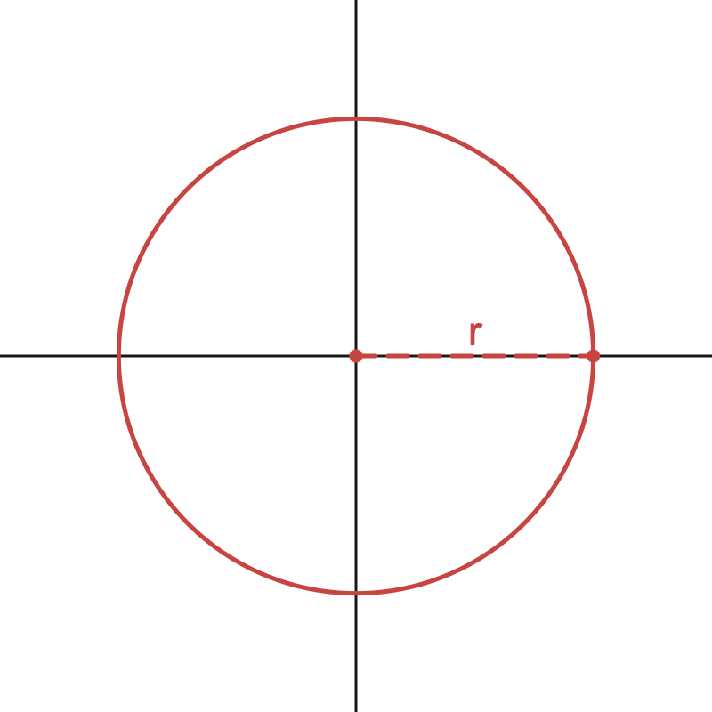

There's something very satisfying to me about metaballs. Watching blobs merge and seperate as they float through space like the digital equivalent of a lava lamp can be hypnotic. In this post I'd like to cover a technique I've been exploring for rendering pixel-perfect metaballs in real-time. Let's start with some prerequisites...
An implicit surface is any surface that can be expressed as an implicit function in the form \(F(\vec{p}) = 0\), where \(\vec{p}\) is a vector representing a point in space. A very simple example of an implicit surface in 2D is \(x^2 + y^2 - r^2 = 0\). If you were to work out all possible values of \(x^2 + y^2 - r^2\) for every \(\vec{p} = (x, y)\) in space and only highlight the points that give 0, you would get a circle of radius \(r\).

Metaballs are a type of implicit surface. Each distinct metaball \(i\) is defined by an implicit function \(F_i(\vec{p})\). By summing up all of these functions and taking the set of points that equals 0 we produce the smooth, 'blobby' surface that is characteristic of metaballs. Often we include a bias parameter \(T\) that gives us some control over the extent of the surface:
$$ F(\vec{p}) = \sum_{i} F_i(\vec{p}) - T = 0 $$
Now to actually render these surfaces in 3D we need to figure out whether or not a given pixel's view ray intersects with this surface. We parameterise a point \(\vec{p}\) along the ray in terms of the ray origin \(r_o\), the ray direction \(r_d\), and the distance \(t\) along the ray:
$$ \delta(t) = r_o + tr_d $$
Plugging \(\delta(t)\) into the function \(F(\vec{p})\) gives us a one-dimensional function with respect to the ray parameter \(t\). The surface is found at the points where this function is equal to 0, in other words it corresponds to the function's roots:
$$ F \circ \delta(t) = 0 $$
Of course if it were really that simple I'd end this post right here. Unfortunately this equation is impossible to solve analytically for anything but the simplest functions, much simpler than what we can make use with. We have to find the solution numerically, by taking a bunch of educated guesses until we converge to the answer.
Ray marching is the process of repeatedly evaluating \(F \circ \delta(t)\) for increasing values of \(t\) until we hit the surface. The simplest way to do this is to march along the ray in fixed-length increments. Larger steps require less work but risk skipping over parts of the surface and producing incorrect results, while smaller steps provide more accuracy at the cost of more work.
Often we can analyse the function to get a better idea of how large a step we can take without overshooting the surface. This is where we can make use the property of Lipschitz continuity. The Lipschitz constant of a function \(f(x)\) is the smallest value \(\lambda\) that satisfies the following inequality for any two points \(a\) and \(b\):
$$ |f(a) - f(b)| \le \lambda |a - b| \label{lipschitz} \tag{1} $$
This says that the distance between the points at \(f(a)\) and \(f(b)\) is never greater than the distance between \(a\) and \(b\) times \(\lambda\). A nice way to visualise this is to imagine placing a double cone over the graph of \(f(x)\) with the origin anywhere on the line, such that the entire function is always contained within the cone. The slopes of the two lines forming the double cone are given by \(\pm\lambda\).
The Lipschitz constant of a function coincides with the value of its steepest slope, or more formally the maximum absolute value of its first derivative:
$$ \lambda = \max(|f'(x)|) $$
This gives us a guarantee on the largest step we can take without overshooting the surface. Moving forward we define \(f(t) = F \circ \delta(t)\). Let \(x_0\) be any root of \(f(t)\) such that \(f (x_0) = 0\), corresponding to the surface. We can then write out equation (\(\ref{lipschitz}\)) as:
$$ |f(t)| \le \lambda |t - x_0| $$
By dividing through by \(\lambda\) we get:
$$ \dfrac{|f(t)|}{\lambda} \le |t - x_0| $$
In other words the absolute value of \(\dfrac{f(t)}{\lambda}\) will give us a step size that is always less than or equal to the distance to the surface. Evaluating this value at every step along the ray can accelerate ray marching considerably.
For a sum of functions like our metaballs equation, we can add the Lipschitz constants of each individual function to get an upper bound on the constant.
$$ \lambda_a + \lambda_b \ge \lambda_{a + b} $$
Using the Lipschitz constant to get a conservative step size is equivalent to finding the intersection between the ray and the enclosing cone mentioned earlier. For a point \(t\) along the ray, the two lines that make up the cone can be described by a pair of equations \(f^{+}\) and \(f^{-}\). Without loss of generality we'll set \(t = 0\):
$$ \begin{aligned} f^{+}(x) = f(t) + \lambda (x) \\ f^{-}(x) = f(t) - \lambda (x) \end{aligned} $$
These are sometimes referred to as inclusion functions of \(f(t)\). The intersection is found by setting either \(f^{+}\) or \(f^{-}\) equal to \(0\) and solving for the root:
$$ \begin{aligned} f(t) \pm \lambda (x) &= 0 \\ \pm \lambda (x) &= -f(t) \\ x &= \pm\dfrac{f(t)}{\lambda} \end{aligned} $$
Yielding the familiar term \(\dfrac{f(t)}{\lambda}\) corresponding to the step size. Looking at the problem this way suggests that we can do this for other types of inclusion functions as well. For example, we can define an asymmetric bounding cone where the upper and lower lines have different slopes. Let \(\lambda^{+}\) and \(\lambda^{-}\) be the maximum and minimum values of the derivative of \(f(t)\), respectively. Then:
$$ \begin{aligned} f^{+}(x) &= f(t) + \lambda^{+} (x) \\ f^{-}(x) &= f(t) + \lambda^{-} (x) \end{aligned} $$
Where:
$$ \begin{aligned} \lambda^{+} = \max(f'(t)) \\ \lambda^{-} = \min(f'(t)) \end{aligned} $$

Often this gives us an even better idea of how far along the ray we can safely step. But we don't need to limit ourselves to straight lines. Replacing our bounding lines with bounding parabolas gives us an even tighter inclusion function whose roots are still relatively simple to solve for. If we let \(\gamma^{\pm}\) be the minimum and maximum values of the second derivative of \(f(t)\) then:
$$ \begin{aligned} f^{+}(x) &= f(t) + f'(t)x + \dfrac{\gamma^{+} x^2}{2} \\ f^{-}(x) &= f(t) + f'(t)x + \dfrac{\gamma^{-} x^2}{2} \end{aligned} $$
Where:$$ \begin{aligned} \gamma^{+} = \max(f''(t)) \\ \gamma^{-} = \min(f''(t)) \end{aligned} $$
Now finding the roots at \(f^{\pm}(x) = 0\) involves solving a quadratic equation, which we can do using the quadratic formula. The roots of the bounding parabolas can be expressed like so:
$$ x = \dfrac{-b \pm \sqrt{b^2 - 2ac}}{a} $$
Where:
$$ a = \gamma^{\pm} \quad b = f'(t) \quad c = f(t) $$
Obviously this requires a bit more work as now we need to evaluate the implicit surface as well as its first derivative at \(t\) before solving a quadratic equation. However in some cases the reduction in the number of steps we need to take to reach the surface often compensates for this added workload.
The inclusion functions we've looked at so far will give us a global bound on the step size anywhere on the ray. However, if we restrict the area of interest to a smaller portion of the ray we are likely to get an even tighter bound. This is the idea behind segment tracing. Given a point on the ray \(t\) and an initial step size \(\epsilon\), segment tracing finds the inclusion function along the segment bounded by \([t, t + \epsilon]\).
$$ \begin{aligned} \lambda^{+} = \max(f'(x)) \quad x \in [t, t + \epsilon] \\ \lambda^{-} = \min(f'(x)) \quad x \in [t, t + \epsilon] \end{aligned} $$
We then march along the ray by the safe step size \(t_{step}\) given by the local inclusion function, or by \(\epsilon\) if \(t_{step} > \epsilon\). Each iteration we choose a new \(\epsilon\) based on the size of the previous step multiplied by some factor \(\kappa\) in an attempt to make a larger step.
 |
I implemented this technique as a single compute shader pass. My approach assumes we already have a GPU-resident buffer of metaball objects.
The idea is to split the screen up into tiles and dispatch one workgroup per tile, where each thread in a workgroup corresponds to a single pixel within the tile. I found a tile size of 16x16 pixels worked best.
The first thing the shader does is sample the depth buffer at each pixel to find the maximum view depth for a given tile, letting us reject metaballs early if they are entirely behind this value. This requires that we already have the depth information of the scene. In my case I render the metaballs after rendering all opaque objects so this is a given.
Each screen tile projects a square frustum into the scene. The next stage is figuring out which metaballs may potentially intersect the frustum. To do this I chose to approximate each frustum as a cone and perform a cone-sphere intersection test, which can be reduced to a simple point-in-cone test.
float3 metaballOffset = metaball.radius / _tileConeAngle.x * coneDirection;
float3 positionVS = mul(_worldToCameraMatrix, float4(metaball.position.xyz, 1.0f)).xyz;
float cosTheta = dot(coneDirection, normalize(positionVS + metaballOffset));
Each thread is responsible for testing one metaball at a time, meaning we can cull 16x16 = 256 metaballs in parallel. Intersecting metaballs are added to a shared memory array by incrementing an atomic counter. The culling stage is performed in batches until all metaballs have been tested. In addition we also keep the mininum and maximum view depths for each tile based on these metaballs.
Metaballs are represented by a struct containing a position, radius, and colour. The position and radius together take up 4 floats and the colour is quantized to 8 bits per channel and packed into a single uint. Altogether the struct occupies 20 bytes of memory which means we can fit a modest 512 metaballs in group shared memory for a reasonable memory cost of 10kb.
struct Metaball
{
float3 position;
float radius;
uint colour;
};
groupshared Metaball groupMetaballs[512];
Once all the metaballs for a given tile are collected the shader can begin segment tracing. The ray uses the mininum and maximum view depths we determined earlier to provide a coarse bound over the location of the surface, and segment tracing begins at the start of this bound.
Finally, the result of the trace is written into a series of g-buffers, namely the position, normal, and colour of the surface at that point. A seperate full-screen pass composites these buffers onto the current render target to produce the final render. You could also probably composite the result directly in the compute shader without a seperate pass, but this was the easiest way to get the result on screen in Unity.
So after all that, is this worth it or useful at all?
For segment tracing to work we need to know where the minima and maxima of the first (and potentially second) derivatives of the function lie along the ray.
This can be solved analytically if we choose our metaball function carefully. The function I chose is:
$$ F(\vec{p}) = (1-|\vec{p}|^2)^3 \quad -1 \le x \le 1 $$
Let's say we want to find \(\lambda^{+} = \max(f'(x))\) for a segment \(x \in [t_0, t_1]\) along the ray. If we plot the derivative of \(F \circ \delta(t)\), we see that it has exactly one maximum:

The value \(x_0\) that gives us the maximum when we plug it into \(f'(x)\) is:
$$ x_0 = \dfrac{-5b - \sqrt{5} \sqrt{b^2 - ac + a}}{5a} $$
To find \(f(t) = F \circ \delta(t)\) we'll plug in the ray equation:
$$ \begin{aligned} F \circ \delta(t) &= F(r_o + tr_d) \\ &= (1-|r_o + tr_d|^2)^3 \\ &= (1 - at^2 - 2bt - c)^3 \end{aligned} $$
Where:
$$ a = r_o \cdot r_o \quad b = r_o \cdot r_d \quad c = r_d \cdot r_d $$
The first derivative is:
$$ f'(t) = -6 (at + b) (1 - at^2 - 2bt - c)^2 $$
The maximum of \(f'(t)\) can be found by analysing the roots of the second derivative:
$$ f''(t) = -6t(1 - at^2 - 2bt - c)^2 + 24(1 - at^2 - 2bt - c)(at + b)^2 $$
Doing so results in a quadratic equation which we can solve.
$$ x_0 = \dfrac{-5b \pm \sqrt{5} \sqrt{b^2 - ac + a}}{5a} $$
To find the local maximum within this segment we need to look at where the end points \([t_0, t_1]\) lie in relation to \(x_0\). If \(x_0\) lies between the end points, then the maximum is equal to \(f(x_0)\). Otherwise, it is the largest of \(f(t_0)\) and \(f(t_1)\):
$$ \begin{equation} \lambda^{+} = \begin{cases} f'(x_0) & \text{if}\ x_0 \in [t_0, t_1] \\ \max(f'(t_0), f'(t_1)) & \text{otherwise} \end{cases} \end{equation} $$
Similar logic can be used to find \(\lambda^{-}\).